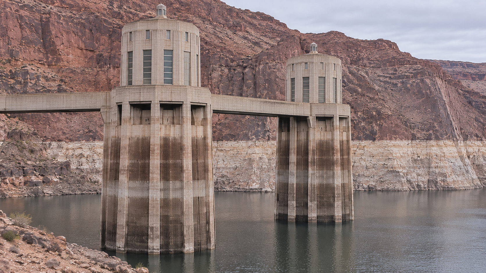

On 1 January, Arizona loses more Colorado River water in a single year than the city of Phoenix uses in four. The order is signed, the arithmetic is fixed, and the three-state agreement that was supposed to decide who absorbs it has not been finalised with 44 days to run.
The cut is not a surprise and it is not the whole story. Here is what actually happens, what does not, and the one lever large enough to change the second year.
What changes on January 1, and by how much
The Colorado River's Lower Basin loses 1.25 million acre-feet of delivery a year in 2027 and 2028 under a record of decision issued by the Interior Department on 21 August 2026. The decision sets operating rules for Lake Powell and Lake Mead through 2036, took effect 1 October and begins cutting deliveries on 1 January 2027.
| State | Annual cut (acre-feet) | Share of its allocation |
|---|---|---|
| Arizona | 760,000 | 27% |
| California | 440,000 | 10% |
| Nevada | 50,000 | 17% |
| Lower Basin total | 1,250,000 | — |
The same decision holds a further 700,000 acre-feet in the reservoirs across the two years. The Upper Basin states — Colorado, Utah, New Mexico and Wyoming — face no mandatory cut at all, only voluntary conservation goals. That asymmetry is why the seven-state negotiation collapsed twice and why the federal government wrote the rules itself.
What 760,000 acre-feet actually is
An acre-foot is 325,851 gallons, or a football field under a foot of water. Arizona's 2027 reduction is 760,000 of them, and the figure is used so often that it stops meaning anything. Converted:
| Measure | Equivalent |
|---|---|
| Gallons | 247.6 billion |
| Years of Phoenix's total water use | ~4 |
| Share of all Arizona municipal use | ~49% |
| Acres of alfalfa, one year | ~169,000 |
| Gallons per household per day, spread across all 2.9m households | ~234 |
| Multiple of CRIT's first off-reservation delivery | ~84× |
Two lines carry the weight. Arizona's 2027 reduction of 760,000 acre-feet equals about 49% of all municipal water use in the state. And spread across every household in Arizona it is about 234 gallons a day each — in the range of what an ordinary household actually uses indoors and out.
That is the arithmetic behind a sentence you will hear repeatedly over the next six weeks: the cut is absorbable. It is absorbable the way a household is absorbable to a 234-gallons-a-day pay cut, using savings, for one year.
Why the tap still runs
Arizona household taps keep running through 2027 because the state has been banking water against this exact date since 1996. No statewide restriction order attaches to 1 January — no rationing schedule, no day-of-week watering ban, no tiered emergency tariff.
The Arizona Water Banking Authority holds long-term storage credits built up precisely to carry municipal users through a federally ordered shortage. The mechanism is recharge: excess river water is spread in basins and injected through recovery wells, and the credits are withdrawn later instead of river water.
Tom Buschatzke chairs the water bank and runs the Department of Water Resources. He has said the stockpile will be drawn on to offset lost river water for 2027.
The bank converts a river cut into an accounting entry. Providers on the Central Arizona Project will see CAP supply reduced by up to 20%; the bank makes up the difference on paper; the pressure holds.
The gap that matters
The bank has not been publicly committed past 2027. It is a finite balance being spent against a two-year order. No one in a position to know has said what covers 2028, and the second year is where the arithmetic stops being absorbable. One year of banking cover against a two-year order is the structural gap in Arizona's 2027 plan.
The same banking is why Arizona agriculture has not yet been cut hard. That is also the queue. CAP carries the reduction, Pinal County is 92% agricultural demand, and farm districts there are operating on a two-year certainty they know expires.
The deal that isn't signed
The three-state agreement dividing the cut is unsigned. The federal order sets the total volume; it does not set who inside each state absorbs it, and that division was supposed to be finished before the cuts began.
Arizona and Nevada have internal plans in place. California has been working out how to divide its 440,000 acre-feet among its own largest users — Metropolitan Water District, Imperial Irrigation District, Palo Verde Irrigation District, Coachella Valley Water District, San Diego County Water Authority — since at least October.
As of Monday it was stalled. Those California agencies disagree over who should use less. The deal that would spare Arizona the worst configuration of the cut is sitting in an in-tray, not on an agenda.
"I'm very optimistic, based on recent discussions, that we're going to close on the agreement language in a way that it will be then ready to go to various boards over the next few weeks." Tom Buschatzke, Arizona Department of Water Resources, 1 October
Buschatzke's optimism was seven weeks old on 17 November 2026, with 44 days until the cuts begin. The "various boards" meet on fixed monthly calendars and the votes are not scheduled. If the language closes, the cuts are shared the way the three states designed them. If it does not, they land where the federal order puts them — concentrated on CAP and on agriculture — while the litigation runs.
The lever nobody is pulling
The Colorado River Indian Tribes hold 662,402 acre-feet of Arizona's 2.8 million acre-foot allocation — the largest single entitlement in the state, more than double Nevada's entire allocation, perfected in 1865 and therefore senior to almost everything else on the river.
An off-reservation tribal water lease is a contract in which a tribe with a senior river entitlement is paid to leave land fallow and deliver the conserved water to a municipal or agricultural buyer outside its reservation.

For most of a century CRIT could not sell a drop, because federal law required the water be used on the reservation. Congress changed that in January 2023, authorising the tribes to lease and exchange water off-reservation within Arizona.
The Colorado River Indian Tribes hold 662,402 acre-feet, 87% the size of the cut, and moved 9,009 of it in the first eleven weeks of authority. That delivery — to the Central Arizona Water Conservation District, finalised 11 September — was reported as a landmark. It is 1.2% of what Arizona has to find on 1 January.
Nothing about the mechanism is theoretical any more. The authority exists, the buyer exists, the contract is signed and the water moves through a canal that already runs past the reservation. The constraint is arithmetic and price: fallowing land to create the credit costs money, the tribe's own farming operation is an employer, and credits are generated a season ahead of delivery.
662,402 acre-feet is the only lever in the state on that scale. Every acre-foot of it that reaches a municipal provider is an acre-foot the water bank does not spend from a balance with one year left in it.
Lake Mead at 1,041 feet
Lake Mead read 1,041.16 feet on 16 November 2026 — about 188 feet below full pool, 27% full and the lowest since it filled in the 1930s.

The operational number is 1,035 feet. Some Hoover Dam turbines lose the head to turn at that elevation and generating capacity falls away in stages. Hoover's power goes to more than a million people across Arizona, Nevada and California, and to the pumping plants that lift CAP water over the Buckskin Mountains. Lose generation, lose the pumping.
Six feet of Lake Mead elevation is roughly a quarter of one year's ordered cut — and less than one evaporation season. At current surface area that is on the order of a few hundred thousand acre-feet, not a margin.
This is what the lawsuit is really about. The cut is designed to protect the elevation. The suit argues the cut is too small to, and that the wrong states are paying for it.
Two states are suing
Nevada sued the Interior Department and the Bureau of Reclamation on 24 August 2026, three days after the record of decision, arguing the plan could drive Lake Mead below 1,000 feet. Arizona moved to intervene in October and the Central Arizona Project has moved to join.
Interior Secretary Doug Burgum's position is that the cuts are "completely manageable" and that Arizona is wrong to litigate. He told KOLD the dispute is over a "theoretical outcome three years from now at the earliest" and that it "may just get tossed out."
The state's case rests on the shape of the curve. Nevada's complaint puts a worst-case 2029 reduction at 213,556 acre-feet, which would leave the state under 86,500 — a figure drawn from secondary reporting of the filing and not read off the document here. Governor Katie Hobbs has been blunter about the Upper Basin, writing that four of seven basin states refused to participate in any shortage sharing at all.
Interior's case and Arizona's case can both be true: the 2027 volume is survivable with banking, and the 2029 curve is not.
The politics moved underneath the deadline
Arizona elected a Democratic House, a Democratic Senate and re-elected Governor Katie Hobbs by a wide margin on 3 November 2026 — the party's first trifecta in the state since 1966. Energy and water bills were central to the campaign.
The new legislature is seated in January, the month the cuts begin. A body that has not held power in sixty years inherits a 27% reduction, active litigation, and a water bank with one year of cover.
Watch the January session calendar before the federal one.
What to watch, in order
- Board agendas. CAP, Metropolitan, Imperial. Language on a December agenda means the deal closes. January opening without it means it probably does not.
- 1 January delivery orders. Reclamation's accounting, not the press releases, shows where the 760,000 acre-feet lands.
- The 1,035 line. A Mead reading at or below it changes the power story, not just the water story.
- Any AWBA statement about 2028. The most important number in the state.
- CRIT leasing volume. Every thousand acre-feet is a thousand the bank keeps.
- The docket. A scheduling order tells you whether a judge intends to touch the decision before it bites.
The counterargument, at its strongest
Interior and the irrigation districts have a case and it should be stated before it is knocked down.
The 2027 volume is covered. Banking exists for exactly this, the municipal system is not being rationed, and litigating an order you have already budgeted for carries its own cost — delay in the storage and exchange projects that would make 2029 easier. Burgum's "manageable" is not a euphemism for year one. It is accurate for year one.
The rebuttal is temporal. Manageable is a claim about twelve months against an order that runs twenty-four. The bank was built for a shortage, not a shortage era. And the litigation exists because the states absorbing 80% of the cut were handed a two-year certainty and no framework after it.
The bottom line
Nothing in this story happens to a tap in January. What happens in January is that the state starts paying a bill out of savings, on the same day its new legislature is sworn in, while the agreement that was supposed to decide who pays sits unsigned and the largest unused entitlement in Arizona moves at 1.2% of the required pace.
The water bank buys the year. The year is the argument.
How we know
Volumes, the state split, the 1 October effective date and the 21 August record of decision come from the decision and Reclamation's water-year accounting. The 1 January delivery date is confirmed by ADWR and Lower Basin schedules. The bank's role and the 20% municipal CAP figure come from ADWR, CAP and Cronkite News reporting. Buschatzke's quotation is KJZZ, 1 October; Burgum's is KOLD, 22 October. Mead elevation and storage are Reclamation daily readings, 16 November. CRIT's 662,402 acre-feet comes from the ADWR agreement and the 2023 authorising act; the 9,009 acre-foot delivery is from CAWCD and CRIT statements of 11 September. Sector shares are ADWR's (22% municipal, 72% agricultural of ~7.0m acre-feet) and the conversions in the table are ours. Litigation dates are from the filings and contemporaneous reporting.
Unconfirmed and to be updated: whether the three-state language has closed; any AWBA position on 2028. The 1,035 turbine threshold, the six-foot elevation estimate and all conversions in the table are ours, not agency figures.
Corrections — report an error to pulseamericanews1@gmail.com with the URL and the claim. Reviewed by the standards desk, 18 November 2026.
Questions
Are Arizona taps going to run dry on January 1?
No. Arizona Water Banking Authority storage credits offset the 2027 municipal loss and no statewide restriction order attaches to the date. Providers on the Central Arizona Project lose up to 20% of CAP supply on paper, and the bank covers it. The cover is committed for one year only.
How much water is Arizona losing?
760,000 acre-feet a year in 2027 and 2028. That is 27% of Arizona's Colorado River allocation, roughly half of all municipal water use in the state, and the largest share of the 1.25 million acre-foot Lower Basin reduction ordered on 21 August 2026.
Who absorbs it?
The Central Arizona Project carries the reduction. Pinal County agriculture, where 92% of demand is agricultural, takes the bulk. Municipal providers lose up to 20% of CAP supply, offset for one year by the Arizona Water Banking Authority.
Is the three-state agreement signed?
No. Arizona and Nevada have plans in place. California has not settled how to divide its 440,000 acre-feet among its own agencies, and the language had not closed as of 17 November 2026.
Can Arizona refuse?
Two states are trying. Nevada sued 24 August, Arizona moved to intervene in October, CAP has moved to join. Interior calls the cuts completely manageable and expects the challenge to be dismissed.
How low is Lake Mead?
1,041.16 feet on 16 November — 188 feet below full pool, 27% full, a record low. Some Hoover Dam turbines stop at 1,035 feet.
What is the CRIT entitlement?
662,402 acre-feet of 1865-priority water, the largest single entitlement in Arizona and 87% the size of the cut. Since January 2023 the tribes may lease it off-reservation; the first 9,009 acre-feet moved on 11 September.

Water in the West
-

-
 World · AnalysisWater Wars: the coming global crisis that will reshape borders
World · AnalysisWater Wars: the coming global crisis that will reshape borders -